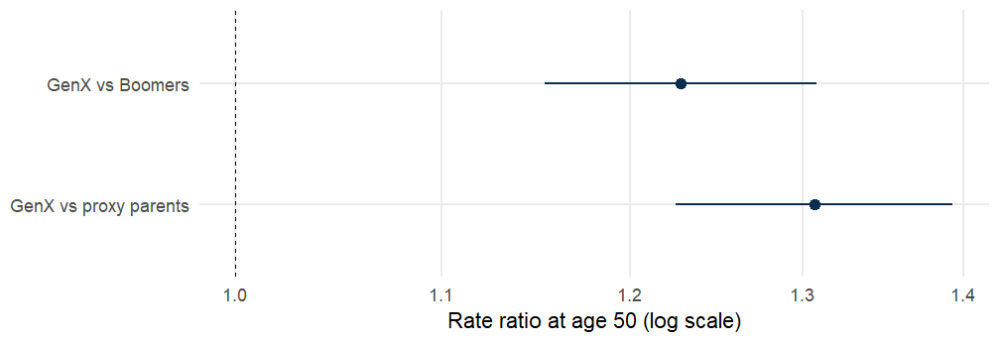
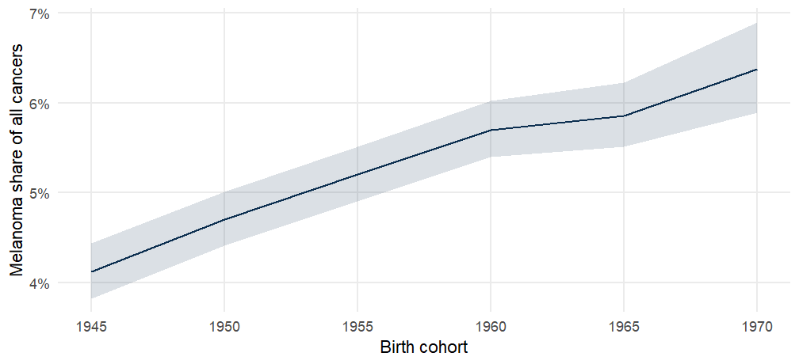
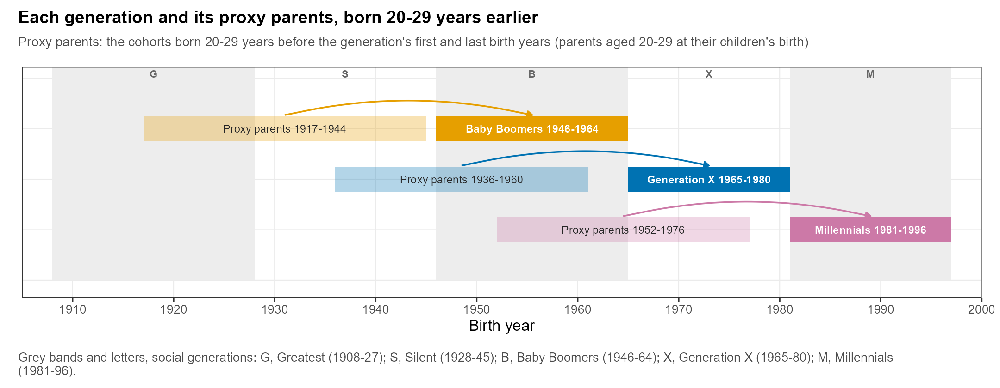
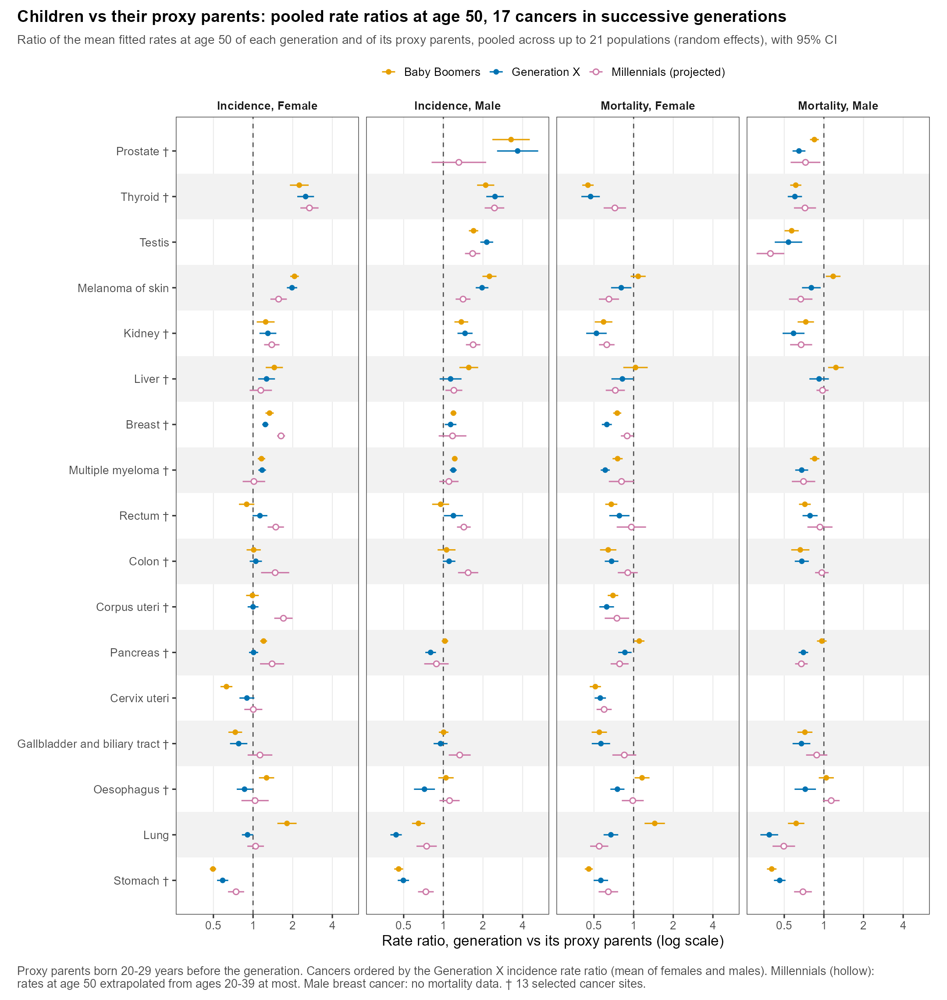

Birth cohorts are narrow. Generations are broader groups that people recognize, such as the Baby Boomers, and they often differ in lifestyle, exposures and access to screening. The fitted cohort pattern (FCP) from Module 2 tells you the rate at a reference age for every cohort. If you average it over the cohorts of each generation, you can compare generations at the same age, which a simple look at period trends cannot do.
The proxy parents of a generation are the cohorts born 20 to 29 years earlier, when their members would have been aged 20 to 29 at the birth of the generation. Comparing a generation with its proxy parents asks: are children at higher risk than their parents were at the same age?
NoteObserved generations only
A generation can be compared at age 50 only if its members have reached about that age in your data. The model can also carry younger cohorts to age 50, but that is a projection, and projection is not covered in this course. The labs keep the cohorts observed near the reference age and leave the other generations out.
Hands-on lab30 min
Compare generations
Fit the model to 5 x 5 cells and extract the cohort pattern at age 50. Keep only the cohorts that were observed near age 50 with fcp_observed() (the helper from Module 2), then average the pattern by generation:
R5 <-rates_fill(rates_chunk(matisse_example(1), age_block =5, per_block =5))M5 <-apc_fit(R5)f50 <-fcp_observed(apc_fcp(M5, age =50), R5)f50$x # the observed cohorts
[1] 1945 1950 1955 1960 1965 1970
fcp_generations(f50)$table
generation
n
mean
se
Greatest
NA
NA
NA
Silent
NA
NA
NA
Boomers
3
25.641
0.54706
GenX
2
31.502
0.88065
Millennials
NA
NA
NA
Proxy parents of Boomers
NA
NA
NA
Proxy parents of GenX
4
24.106
0.52417
Proxy parents of Millennials
4
29.254
0.58667
These data cover 1991 to 2019, so at age 50 only the cohorts born 1945 to 1970 were observed. That covers the Baby Boomers (three cohorts) and the first part of Generation X (two cohorts). The other generations have fewer than two observed cohorts (min_cohorts = 2), so their means are NA. We do not project them.
The table shows the mean fitted rate at age 50 for each generation (mean, per 100,000), the number of observed cohorts averaged (n) and its standard error. Where a generation is only partly observed, its mean describes the observed part.
fcp_contrast() turns the means into rate ratios, with confidence intervals that account for the covariance between means. Contrasts that need an unobserved generation come out as NA, so we keep the two that can be computed:
rr <-fcp_contrast(f50)[contrast %in%c("GenX vs Boomers", "GenX vs proxy parents")]rr[, .(contrast, rr =round(rr, 2), lo =round(lo, 2), hi =round(hi, 2))]
contrast
rr
lo
hi
GenX vs Boomers
1.23
1.15
1.31
GenX vs proxy parents
1.31
1.23
1.39
rr[, contrast :=factor(contrast, levels =rev(contrast))]ggplot(rr, aes(rr, contrast)) +geom_vline(xintercept =1, linetype =2, linewidth =0.3) +geom_pointrange(aes(xmin = lo, xmax = hi), colour ="#0B2E4F", linewidth =0.5) +scale_x_log10() +labs(x ="Rate ratio at age 50 (log scale)", y =NULL)

Figure 1: Rate ratios at age 50 between Generation X and the Baby Boomers, and between Generation X and its proxy parents (synthetic melanoma-like data, observed cohorts only; 95% confidence intervals; logarithmic axis).
A ratio above 1 means the later generation has higher rates at that age. In this synthetic example Generation X is above both the Baby Boomers and its proxy parents, which is how the data were built: a steadily rising cohort pattern. With registry data that cover more years, more generations are observed and more contrasts can be computed.
Hands-on lab10 min
Early and late onset
Are the rates rising faster in young adults than in older people? ld_onset() averages the local drifts (Module 2) over the age groups below a cut age (early onset) and from the cut age upward (late onset), and gives the difference:
ld_onset(M5, cut =50)[, .(onset, age_groups = n, percent_per_year =round(drift, 2),lo =round(lo, 2), hi =round(hi, 2))]
onset
age_groups
percent_per_year
lo
hi
early
3
1.33
0.89
1.78
late
7
2.08
1.81
2.35
early - late
NA
-0.73
-1.21
-0.24
A negative early - late difference means that early-onset rates are rising more slowly than late-onset rates; the interval tells you how certain that is. This is a useful summary when you study early-onset disease.
Hands-on lab20 min
Pool across populations
One study often fits the same model in many populations: the Europe case study has 21. To summarize them, pool the log rate ratios with a random-effects meta-analysis (DerSimonian-Laird), which allows the true ratio to differ between populations. We use the four synthetic populations A to D as stand-ins:
by_pop <-rbindlist(lapply(1:4, function(i) { R <-rates_fill(rates_chunk(matisse_example(i), 5, 5)) M <-apc_fit(R)fcp_contrast(fcp_observed(apc_fcp(M, age =50), R))[contrast =="GenX vs Boomers"][, population := LETTERS[i]]}))pooled <-pool_rr(by_pop$log_rr, by_pop$se)pooled[, .(populations = k, pooled_rr = rr, lo, hi, tau2, I2 = i2)]
populations
pooled_rr
lo
hi
tau2
I2
4
1.3212
1.1851
1.4729
0.01007
0.84556
Figure 2: Generation X vs Baby Boomers rate ratio at age 50 in four synthetic populations (observed cohorts only), and the random-effects pooled ratio (95% confidence intervals).
tau2 is the between-population variance of the log ratio and I2 the share of the variation that is real heterogeneity rather than sampling error. A high I2, as here, tells you the populations genuinely differ. In this synthetic set that is by design.
Sometimes the question is not “how high are the rates?” but “what fraction of deaths (or cases) is due to a given cause?” rates_share() builds a rates object whose events are the cause and whose offsets are all-cause events. fcp_share() then fits the model and returns the fitted cohort share at a reference age.
The package example uses melanoma against all cancers (examples 1 and 7), so the share is “melanoma cases per cancer case”:
ggplot(sh, aes(cohort, share)) +geom_ribbon(aes(ymin = lo, ymax = hi), fill ="#0B2E4F", alpha =0.15) +geom_line(colour ="#0B2E4F", linewidth =0.7) +scale_y_continuous(labels = scales::label_percent()) +labs(x ="Birth cohort", y ="Melanoma share of all cancers")

Figure 3: Fitted cohort share of melanoma among all cancers at age 50, for the cohorts observed near that age (synthetic data, direct estimator, 95% confidence interval).
There are two estimators, "direct" (fit the share itself) and "ratio" (fit the cause and all-cause rates separately and divide). In this example they agree closely. The share can also be averaged by generation and compared, keeping the observed cohorts as above.
ImportantShares must stay well below 1
A log-linear model of a proportion is adequate only when the share is well below 1. fcp_share() warns if a fitted share exceeds 0.95. When a cause makes up most of the events (for example, all cancers among all cancers), interpret results with care.
Case study25 min
Read real figures
Generations and their proxy parents. In the Europe study, each generation (dark bar) is compared with the cohorts born 20 to 29 years earlier (light bar):

Preliminary figure from the Europe case study (work in progress). Grey bands and letters mark the social generations: G, Greatest; S, Silent; B, Baby Boomers; X, Generation X; M, Millennials. Arrows run from the proxy parents to their generation. The Millennials are mostly projected to age 50, which this course does not cover.
Pooled rate ratios. Each point below is the ratio of a generation’s mean fitted rate at age 50 to that of its proxy parents, pooled across up to 21 populations by random-effects meta-analysis, for 17 cancers:

Preliminary figure from the Europe case study. Rate ratios above 1 mean the generation has higher rates at age 50 than its proxy parents did. Ratios for the Millennials rely on projected cohorts; focus on the Baby Boomers and Generation X.
Self-check5 min
Self-check
Who are the “proxy parents” of Generation X (born 1965 to 1980)?
People born in 1900 to 1920.
Cohorts born 20 to 29 years earlier, from 1936 to 1960.
The Millennials.
Proxy parents are the cohorts born 20 to 29 years before the generation’s first and last birth years, approximating the age of parents at the child’s birth. social_generations() lists them.
Why use a random-effects model to pool rate ratios across populations?
It allows the true ratio to differ between populations instead of assuming one common ratio.
It is faster than fixed effects.
It removes the need for confidence intervals.
Populations differ in their exposures and health systems, so assuming a single true ratio is unrealistic. The random-effects model estimates the average ratio and the between-population variance (tau2).
A fitted cohort share of 0.04 at age 50 for the 1955 cohort means…
4% of 50-year-olds in that cohort have the disease.
The rate is 4 per 100,000.
4% of the events (cases or deaths) at age 50 in that cohort are due to the cause.
A share is a proportion of all-cause events, not a rate per person. In the example, it is melanoma cases per cancer case.
Finished this module? Mark it complete to track your progress.
Social generations
Birth cohorts are narrow. Generations are broader groups that people recognize, such as the Baby Boomers, and they often differ in lifestyle, exposures and access to screening. The fitted cohort pattern (FCP) from Module 2 tells you the rate at a reference age for every cohort. If you average it over the cohorts of each generation, you can compare generations at the same age, which a simple look at period trends cannot do.
matisseRfollows the definitions used by Rosenberg and Filho (JAMA Netw Open 2024):The proxy parents of a generation are the cohorts born 20 to 29 years earlier, when their members would have been aged 20 to 29 at the birth of the generation. Comparing a generation with its proxy parents asks: are children at higher risk than their parents were at the same age?
A generation can be compared at age 50 only if its members have reached about that age in your data. The model can also carry younger cohorts to age 50, but that is a projection, and projection is not covered in this course. The labs keep the cohorts observed near the reference age and leave the other generations out.